무선설비산업기사 (2008-03-02 기출문제)
1과목: 디지털 전자회로
1. 저역통과 RC 회로에 양의 스텝(step) 전압 입력을 공급할 때 출력 파형에 가까운 것은?
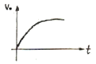
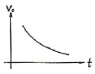
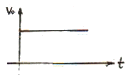
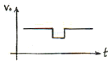
(정답률: 89%)

2. 다음 중 비동기식 카운터와 관계없는 것은?
- 고속계수 회로에 적합하다.
- 리플 카운터라고도 한다.
- 회로 설계가 동기식보다 비교적 용이하다.
- 전단의 출력이 다음 단의 트리거 입력이 된다.
(정답률: 80%)
3. 다음 중 불 대수식 A+BC와 등가인 것은?
- AB(A+B)
- (A+B)(A+C)
- (A+B)AC
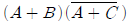
(정답률: 87%)
4. 다음 중 고주파 증폭회로에서 중화회로를 사용하는 주목적은?
- 이득의 증가
- 주파수의 체배
- 자기발진의 방지
- 전력 효율의 증대
(정답률: 85%)
5. 다음 중 주파수 변조방식의 특징이 아닌 것은?
- 진폭변조보다 레벨 변동 및 잡음에 강하다.
- 평형 변조기를 사용한다.
- AFC 회로가 필요하다.
- 변별기를 이용하여 복조한다.
(정답률: 66%)
6. FM의 변조지수가 7.5일 때 10[kHz]의 신호를 FM으로 변조하면, 이 경우 주파수 대역폭은 몇 [kHz]인가?
- 75
- 170
- 320
- 150
(정답률: 61%)
7. 다음 중 논리식
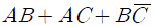
을 간단히 하면?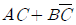
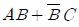
- AC+B
- AB+C
(정답률: 60%)
8. CR 발진기의 설명으로 가장 적합한 것은?
- C 및 R을 사용하여 정궤환에 의하여 발진한다.
- 부성저항을 이용한 발진기이다.
- C 및 R로서 부궤환에 의하여 발진한다.
- 압전기 효과를 이용한 발진기이다.
(정답률: 86%)
9. 여러 개의 입력 신호 가운데 하나를 선택하여 출력하는 동작을 하는 것은?
- 디멀티플렉서
- 멀티플렉서
- 레지스터
- 디코더
(정답률: 93%)
10. 그림과 같은 회로의 입력에 정현파(V1)를 인가했을 때의 전달 특성은? (단, 다이오드의 동작 시 저항성분은 Rf이며, Rf＜R)
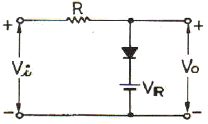
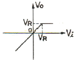
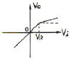
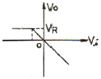
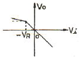
(정답률: 78%)
11. 그림과 같은 RC 필터회로에 관한 설명 중 틀린 것은?
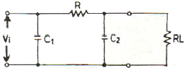
- RC 필터를 첨가함으로써 직류출력 전압이 다소 감소 된다.
- 부하에 나타나는 리플을 크게 감소시킬 수 있다.
- C1에 나타나는 전압 중 직류성분이 필터에 의해 차단되고 부하에는 교류전압만 나타난다.
- 리플의 교류성분을 감소시키기 위한 회로이다.
(정답률: 83%)
12. R과 C에 의하여 발진주파수가 결정되는 발진회로에서 시정수를 작게 하면 발진은 어떤 변화가 생기는가?
- 발진주파수가 낮아진다.
- 발진주파수가 높아진다.
- 발진주파수의 영향이 없다.
- 발진기 이득이 커진다.
(정답률: 81%)
13. 다음 회로에서 Re의 값과 관계없는 것은?(단, 출력 전압 및 전류는 컬렉터측이다.)
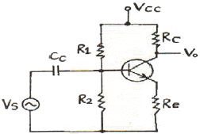
- Re가 크면 클수록 입력 임피던스는 커진다.
- Re가 크면 클수록 안정계수는 S는 적어진다.
- Re가 크면 클수록 증폭된 컬렉터 전류는 적어진다.
- Re가 크면 클수록 전압증폭도는 커진다.
(정답률: 71%)
14. 다음 그림과 같은 회로의 시정수(time constant)는?
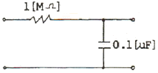
- 0.1초
- 0.22초
- 0.42초
- 0.62초
(정답률: 91%)
15. 전류직렬 부궤환회로에서 부궤환을 걸지 않았을 때보다 증가되지 않는 것은?
- 출력 임피던스
- 입력 임피던스
- 비직선 왜곡
- 대역폭
(정답률: 79%)
16. 그림의 논리회로에서 출력 X의 논리식은?
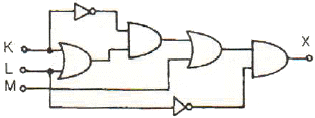
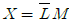
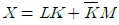
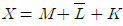
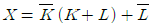
(정답률: 79%)
17. 트랜지스터의 활성영역에서 베이스 접지 시 전류증폭률 α가 0.98, 역포화 전류 ICO가 100[μA], 베이스 전류가 IB=10[mA]일 때, 컬렉터 전류 IC는 얼마인가?
- 495[mA]
- 49[mA]
- 5[μA]
- 0.5[μA]
(정답률: 79%)
18. 다음의 연산회로는 어느 회로인가?
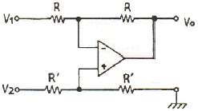
- 부호변환회로
- 미분회로
- 적분회로
- 감산회로
(정답률: 70%)
19. TTL NAND gate에서 totem-pole형 출력 TR이 사용되는 주된 이유는?
- 팬-아웃(Fan-out) 수를 늘리기 위해서이다.
- 잡음 여유를 크게 하기 위함이다.
- 오동작을 방지하기 위함이다.
- 고속 스위칭 동작을 시키기 위해서이다.
(정답률: 75%)
20. 다음 그림의 회로도에 해당되는 것은?
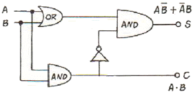
- 반가산기
- 전가산기
- 반감산기
- 전감산기
(정답률: 88%)
2과목: 무선통신 기기
21. 슈퍼헤테로다인 수신기에 있어서 고주파 증폭회로의 역할이 아닌 것은?
- S/N 개선
- 주파수 안정
- 불요방사의 억제
- 수신기의 감도 향상
(정답률: 58%)
22. 원하는 신호에 근접한 주파수의 방해가 있는 경우 수신기의 감도가 저하되는 현상은?
- 혼변조
- 상호변조
- 감도억압효과
- 스퓨리어스 저하효과
(정답률: 79%)
23. 다음 중 FM 송신기의 구성부로 적합하지 않은 것은?
- 변조부
- 전력증폭부
- 진폭제한부
- 주파수체배부
(정답률: 57%)
24. 송신기에서 의사 공중선 (저항값이 50[Ω])으로 최대의 전력이 전달되도록 조정 하였을 때 고주파 전력계의 지시가 10[A]였다면 송신기의 출력전력은 몇 [kW] 인가?
- 2.5[kW]
- 5[kW]
- 7.5[kW]
- 10[kW]
(정답률: 81%)
25. 포락선 검파기에서 Diagonal Clipping이 발생하는 이유로 가장 적합한 것은?
- 검파기 회로의 시정수가 적당한 경우
- 검파기 회로의 시정수가 너무 큰 경우
- 검파기 회로의 시정수가 너무 작은 경우
- 검파기의 부하가 저항만으로 구성된 경우
(정답률: 94%)
26. 포스터-실기 검파기가 주로 하는 기능으로 가장 적합한 것은?
- FM 신호의 진폭을 제한한다.
- FM 신호의 중간주파 신호를 증폭한다.
- 복조된 신호파에서 고주파 성분을 제거한다.
- FM 신호의 주파수 변화를 진폭변화로 변환하여 신호파를 재생한다.
(정답률: 62%)
27. 무선 송신기의 종합 특성을 나타내는 용어로 적합하지 않은 것은?
- 점유주파수대폭
- 스퓨리어스 발사강도
- 주파수 안정도
- 영상주파수 선택도
(정답률: 74%)
28. 수퍼헤테로다인 수신기에서 스퓨리어스 응답의 주된 원인이 있는 부분은?
- 고주파 증폭부
- 저주파 증폭부
- 중간주파 증폭부
- 국부발진부
(정답률: 68%)
29. 다음 중 수신기 감도를 향상시키는 방법으로 적합하지 않은 것은?
- 고주파 동조회로의 Q를 크게 한다.
- IF 대역폭을 가능한 한 넓게 취한다.
- 내부 잡음이 적은 주파수 변환기를 사용한다.
- 고주파 증폭부는 내부 잡음이 적은 것을 사용한다.
(정답률: 87%)
30. 다음 중 FM 송신기의 전력측정법이 아닌 것은?
- 열량계에 의한 전력측정
- C-M형 전력계법
- 직선검파기에 의한 전력측정
- 볼로미터 브리지에 의한 전력측정
(정답률: 80%)
31. 부동충전방식의 특징에 대한 설명 중 적합하지 않은 것은?
- 축전기의 수명이 짧아진다.
- 전화국 전원 등에 많이 이용된다.
- 축전지의 용량이 비교적 적어도 된다.
- 부하에 대한 전압변동이 적고 직류출력 전압이 안정하다.
(정답률: 87%)
32. AM 송신기에서 단일 주파수로 50[%] 변조를 하였을 때의 반송파와 상 측대파와의 전력비는?
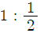
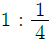
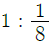
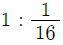
(정답률: 67%)
33. 인버터(inverter)에 대한 설명으로 맞는 것은?
- 직류전원을 다른 크기의 직류전원으로 변환하는 장치
- 직류전압을 일정한 주파수의 교류전압으로 변환하는 장치
- 교류전압을 직류전압으로 변환하는 장치
- 교류전압을 다른 주파수와 크기를 갖는 교류전압으로 변환하는 장치
(정답률: 94%)
34. 다음 그림은 통상 사용되는 FM 송신기의 구성도이다. 빈 곳 A에 들어갈 수 없는 회로는?
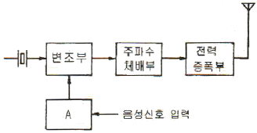
- muting 회로
- 가청주파 증폭기 회로
- Pre-emphasis 회로
- 순시편이제어 회로
(정답률: 72%)
35. 무선 송ㆍ수신기에 사용되는 발진기의 주파수 변동원인과 그에 대한 대책으로 적합하지 않은 것은?
- 온도의 변화 → 항온조 사용
- 전원 전압의 변동 → 정전압 회로 사용
- 부하의 변동 → 완충 증폭기 시용
- 동조점 불안정 → 높은 주파수 사용
(정답률: 83%)
36. 일반적으로 잡음이 있는 수신기의 잡음지수 F의 크기로 가장 적합한 것은?
- F = 1
- F ＜ 1
- F ＞ 1
- F ≤ 1
(정답률: 75%)
37. 다음 변조방식에서 비트에러확률의 성능이 좋은 순서대로 된 것은? (단, SNR은 동일한다.)
- ASK ＞ FSK ＞ PSK
- FSK ＞ ASK ＞ PSK
- PSK ＞ FSK ＞ ASK
- PSK ＞ ASK ＞ FSK
(정답률: 83%)
38. 전파정류기의 부하 양단의 평균 전압이 200[V]이고 맥동률이 2[%]라고 하면 교류전압의 실효값은 약몇 [V] 인가?
- 2.8
- 4.0
- 5.6
- 8.0
(정답률: 80%)
39. 마이크로파 통신의 특징에 대한 설명 중 틀린 것은?
- 가시 거리내 통신이다.
- 외부 잡음의 영향이 적다.
- SN비 개선도를 크게 할 수 없다.
- 기상 상태에 따라 전송품질이 변한다.
(정답률: 76%)
40. 정류기의 평활회로에 이용하는 여파기로 가장 적합한 것은?
- 고역 통과 여파기
- 저역 통과 여파기
- 대역 통과 여파기
- 대역 소거 여파기
(정답률: 83%)
3과목: 안테나 개론
41. 이지 S형 라디오 덕트가 발생하였을 때 전파통로로 가장 적합한 것은?
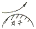
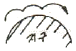
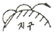
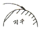
(정답률: 83%)
42. 다음 중 극초단파용 안테나로 적합하지 않은 것은?
- 야기 안테나
- 전파 렌WM
- 파라볼라 안테나
- 슬롯(slot) 안테나
(정답률: 68%)
43. 다음 중 가장 광대역 특성을 가진 안테나는?
- 동축 다이폴 안테나
- 대수주기 안테나
- 폴디드(folded) 다이폴 안테나
- 1파장 루프 안테나
(정답률: 76%)
44. 자유공간에서 공중선 전력 1[kW], 공중선 효율 90[%], 상대이득 4인 반파 송신 공중선에서 10[km] 떨어진 지점에서의 전계강도는 약 몇 [mV/m] 인가?
- 2.1 [mV/m]
- 4.2 [mV/m]
- 21 [mV/m]
- 42 [mV/m]
(정답률: 55%)
45. 다음 중 선박용 레이더에 가장 많이 사용되는 안테나는?
- 루프(loop) 안테나
- 애드콕(adcock) 안테나
- 헤리컬(helical) 안테나
- 슬롯 어레이(slot arrary) 안테나
(정답률: 89%)
46. λ/4 수직접지 안테나에 대한 설명 중 적합하지 않은 것은?
- 발사전파는 수직편파이다.
- 방송용으로 많이 쓰인다.
- 복사저항은 약 36.56[Ω]이다.
- 단파대 선박 통신용으로 많이 쓰인다.
(정답률: 82%)
47. 대기중의 와류에 의하여 유전율이 불규칙한 공기뭉치가 발생함에 따라 입사 전파의 산란에 의해서 발생하는 페이딩은?
- 감쇠형 페이당
- 신틸레시션 페이딩
- K형 페이딩
- 덕트형 페이딩
(정답률: 78%)
48. 다음 중 지상파가 아닌 것은?
- 지표파
- 회절파
- 대지 반사파
- 전리층 반사파
(정답률: 85%)
49. 우주통신에서 전파의 창 범위를 결정하는 요소로 적합하지 않은 것은?
- 잡음의 영향
- 전리층의 영향
- 대류권의 영향
- 안테나의 영향
(정답률: 62%)
50. 수퍼게인(super gain)안테나를 TV 방송용으로 사용하려고 할 때 사용방식으로 적합하지 않은 것은?
- 트랩회로를 설치하여 광대역성으로 한다.
- 안테나의 Q를 낮게 하여 광대역성으로 한다.
- 광대역으로 하기 위하여 안테나 소자의 직경을 크게 한다.
- 직렬공진과 병렬공진의 합성리액턴스 성분을 크게하여 광대역 특성을 갖게 한다.
(정답률: 65%)
51. 안테나의 길이를 줄이지 않고 안테나 고유주파수보다 높은 주파수에 공진을 시키기 위한 방법으로 가장 적합한 것은?
- 안테나와 직렬과 코일을 접속한다.
- 안테나와 병렬로 코일을 접속한다.
- 안테나와 직렬로 콘덴서를 접속한다.
- 안테나와 병렬로 콘덴서를 접속한다.
(정답률: 91%)
52. 다음 중 야기 안테나의 이득을 증가시키는 방법으로 가장 적합한 것은?
- 반사기의 수를 증가시킨다.
- 도파기의 수를 증가시킨다.
- 투사기의 수를 증가시킨다.
- 도파기의 길이를 증가시킨다.
(정답률: 72%)
53. 다음 중 반사계수를 나타내는 식은? (단, 급전선의 특성 임피던스를 Z0, 부하의 임피던스를 ZL이라 한다.)
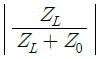
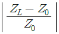
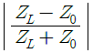
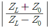
(정답률: 84%)
54. 전리층에 대한 설명 중 적합하지 않은 것은?
- 전자밀도는 D ＜ E ＜ F 층의 순으로 크다.
- E층은 주간에 낮은 주파수의 단파를 반사한다.
- F층은 단파를 반사하고 초단파이상은 뚫고 나간다.
- D층은 장파에 대하여 주야간에 관계없이 큰 감쇠를 준다.
(정답률: 75%)
55. 동일 주파수를 사용하고 있는 λ/2 다이폴 안테나와 λ/4 수직접지안테나의 실효고의 비로 가장 적합한 것은?
- 1 : 1
- 2 : 1
- 4 : 1
- 8 : 1
(정답률: 83%)
56. 안테나 회로를 정합하는 이유로 적합하지 않은 것은?
- 손실을 적게 한다.
- 최대 전력을 전송한다.
- 정재파비를 크게 한다.
- 주파수 특성을 좋게 한다.
(정답률: 80%)
57. 수직다이폴 안테나에 비해 수평다이폴 안테나의 특징으로 가장 적합한 것은?
- 도시 잡음의 방해가 적다.
- 수평면 지향특성은 무지향성이다.
- 정합회로 안테나의 입력단에 부착하기가 어렵다.
- 대지의 도전율 영향이 크다.
(정답률: 66%)
58. 자유공간을 전파하는 균일평면 전자파가 있다. 이 전자계내에 축적되어 있는 전계에너지 밀도와 자계에너지 밀도를 각각 We, Wm이라고 할 때 관계식으로 옳은 것은?
- We ＞ Wm
- We ＜ Wm
- We = Wm
- 1 ＜ We ＞ Wm
(정답률: 79%)
59. 다음 중 도파관 창의 목적으로 가장 적합한 것은?
- 도파관내의 반사파를 증가시켜 진행파를 방해한다.
- 도파관내의 임피던스를 변화시켜 정합시킨다.
- 도파관내의 진행파를 방해하여 출력을 조절한다.
- 도파관의 보호를 위한 차단망이다.
(정답률: 83%)
60. 반파장 다이폴 안테나와 피측정 안테나에서 동일 방사 전력으로 방사시킨 전파의 최대 방사 방향에서의 전계강도가 각각 5[㎷/m]와 25[㎷/m]이었다면 피측정 안테나의 상대이득은 약 몇 [㏈]인가?
- 10
- 14
- 16
- 28
(정답률: 71%)
4과목: 전자계산기 일반 및 무선설비기준
61. 채널(channel)에 대한 설명으로 옳은 것은?
- 중앙처리장치의 지시를 받아 독립적으로 입ㆍ출력 장치를 제어한다.
- 주기억장소를 각 프로세서에 할당한다.
- 주기억장치와 중앙처리장치 사이에 위치한다.
- 목적프로그램을 주기억장치에 적재한다.
(정답률: 70%)
62. 다음 마이크로 명령어에 대한 설명으로 틀린 것은?
- OP 코드 비트 수는 명령어 코드의 수를 나타낸다.
- OP 코드의 비트 수가 오퍼랜드의 비트 수 보다 길다.
- 오퍼랜드에는 주소, 데이터, 레지스터 등이 저장된다.
- 0-주소 명령어는 오퍼랜드의 주소 부분이 없는 명령 형식이다.
(정답률: 59%)
63. 스마트 더스트(Smart Dust) 프로젝트에 사용하기 위하여 개발된 컴포넌트 기반 내장형 운영체제로 센싱 노드와 같은 초저전력, 초소형, 저가의 노드에 저전력, 최소한의 하드웨어 리소스 사용을 목표로 하는 것은?
- 임베디드 리눅스
- tiny OS
- pal OS
- 윈도 CE
(정답률: 80%)
64. 입ㆍ출력시 중앙처리장치가 입ㆍ출력의 완료 여부를 시험하는 명령을 수행해야 하므로 그 동안 다른 연산을 위해 중앙처리장치를 사용할 수 없는 가장 비효율적인 I/O 방식은?
- Programmed I/O
- Channel I/O
- Interrupt I/O
- Direct memory access I/O
(정답률: 77%)
65. 외부 또는 내부로부터 긴급 서비스의 요청에 의하여 CPU가 현재 실행중인 일을 중단하고, 그 요청에 합당한 서비스를 하는 것을 무엇이라고 하는가?
- 인터럽트(Interrupt)
- 명령(Command)
- 채널프로그램(Channel Program)
- 버스트 방식(Burst Mode)
(정답률: 84%)
66. 10진수 1⑤를 8진수로 변환한 것으로 옳은 것은?
- 123
- 151
- 425
- 513
(정답률: 89%)
67. 다음 중 운영체제의 기본 목적이 아닌 것은?
- 처리 능력을 향상시키도록 한다.
- 조작법을 간략화 한다.
- 처리 시간을 단축한다.
- 특정한 프로그램 언어만 제공한다.
(정답률: 87%)
68. 다음 중 레지스터의 종류가 아닌 것은?
- Accumulator
- Program Counter
- Instruction Fetch
- Index register
(정답률: 77%)
69. 다음 자료(data)의 단위를 설명한 것 중 틀린 것은?
- 비트(bit)는 정보를 나타내는 최소단위이다.
- 바이트(byte)는 문자를 표시하는 최소단위이다.
- 필드(field)는 고유이름을 가진 논리적 자료의 최소단위이다.
- 파일(file)은 프로그램의 입ㆍ출력 단위이며 필드의 집합이다.
(정답률: 74%)
70. 자료의 표현방식에서 한글/한자의 경우는 몇 비트로 표현 되는가?
- 1
- 4
- 8
- 16
(정답률: 77%)
71. 정보통신부장관이 전파자원을 확보하기 위하여 수립ㆍ시행하여야 하는 시책이 아닌 것은?
- 새로운 주파수의 이용기술 개발
- 이용중인 주파수의 이용효율 향상
- 전파이용 중ㆍ장기 계획 수립
- 국가간 전파혼신의 해소와 이의 방지를 위한 협의ㆍ조정
(정답률: 47%)
72. 다음 중 형식등록을 하여야 하는 무선설비의 기기가 아닌 것은?
- 라디오부이의 기기
- 디지털선택호출장치의 기기
- 생활무선국용 무선설비의 기기
- 해상이동전화용 무선설비의 기기
(정답률: 50%)
73. 전력선통신설비에서 발사되는 고조파ㆍ저조파 또는 기생발사강도는 기본파에 대하여 몇 데시벨 이하이어야 하는가?
- 0 데시벨
- 10 데시벨
- 20 데시벨
- 30 데시벨
(정답률: 68%)
74. “우주국과 통신을 하기 위하여 지구에 개설한 무선국”으로 정의되는 것은?
- 우주국
- 지구국
- 해안국
- 위성국
(정답률: 89%)
75. 다음 중 공중선계가 충족하여야 할 조건이 아닌 것은?
- 공중선은 이득이 높을 것
- 정합은 신호의 반사손실이 최소화되도록 할 것
- 감도는 낮은 신호입력에서도 양호할 것
- 지향성은 복사되는 전력이 목표하는 방향을 벗어나지 아니하도록 안정적일 것
(정답률: 56%)
76. “공중선에 공급되는 전력과 등방성 공중선에 대한 임의의 방향에 있어서의 공중선 이득의 곱”으로 정의되는 것은?
- 규격전력
- 반송파전력
- 첨두포락선전력
- 등가등방복사전력
(정답률: 59%)
77. “특정한 주파수의 용도를 정하는 것”으로 정의되는 것은?
- 주파수분배
- 주파수할당
- 주파수회수
- 주파수재배치
(정답률: 70%)
78. 일반적으로 송신설비의 공중선ㆍ급전선 등 고압전기를 통하는 장치는 사람이 보행하거나 기거하는 평면으로부터 몇 미터 이상의 높이에 설치하여야 하는가?
- 1
- 2.5
- 4
- 5.5
(정답률: 93%)
79. 인증을 받고자 하는 제조자는 정보통신기기 인증신청서를 누구에게 제출하여야 하는가?
- KT 사장
- 전파연구소장
- 지방 체신청장
- 정보통신부장관
(정답률: 61%)
80. 다음 ( )안에 들어갈 내용으로 가장 적합한 것은?
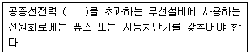
- 1와트
- 5와트
- 10와트
- 20와트
(정답률: 93%)
RC 회로는 저역통과 필터로서, 고주파 신호를 차단하고 저주파 신호를 통과시키는 역할을 한다. 이 때, 입력 신호의 주파수가 RC 회로의 컷오프 주파수보다 낮을수록 출력 신호의 크기가 크게 나타난다.
따라서 양의 스텝 전압 입력을 공급할 때, 초기에 입력 신호의 주파수가 0에 가까워서 RC 회로의 컷오프 주파수보다 낮기 때문에 출력 신호의 크기가 크게 나타난다. 이에 따라 ""이 출력 파형에 가까운 것이다.